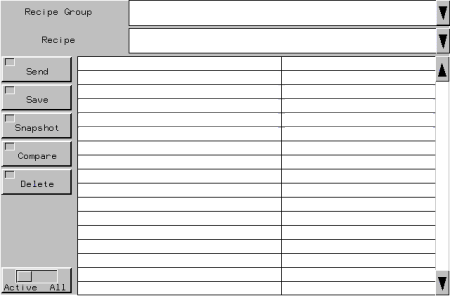
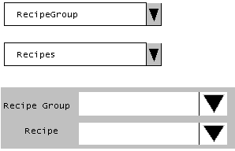
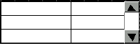
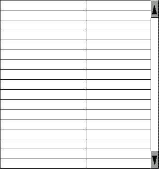
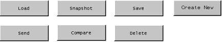
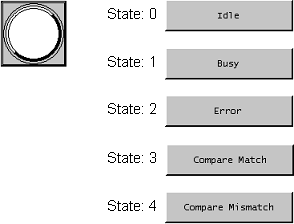
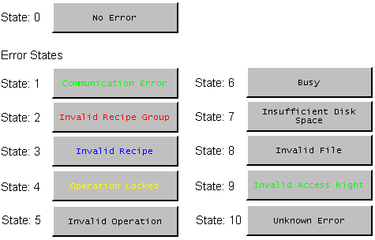

|
|
|
|
|
|
|
|
Vijeo-Designer provides a Recipe folder in the Toolchest. Select a Recipe part in the Toolchest and assign to it a set of recipe control variables.
You can drag these Recipe parts from the Recipe folder in the Toolchest to the panel:
Manager – part that allows you to select recipe groups and operations. For more information on how to create a Recipe Manager part, see Section 17.4.1.1 Creating the Recipe Manager and Lists.

Each button has a lamp to indicate the current state of the operation. You can define the colors for each state. The Send, Snapshot, and Save buttons have color settings for the following states: Busy, Error, and OK (success). The Compare button has color settings for the following states: Busy, Error, Compare Match, and Compare Mismatch.
You can replace existing buttons by dropping different operation buttons overtop the manager.

You should not create multiple Recipe Manager Toolchest parts that use the same recipe control on the same panel. If this occurs, it would cause incorrect Runtime behavior.
When using the Manager, the size of the object in the editor does not match the size at runtime. Build and download to the target machine to confirm the dimensions of the recipe Manager.
The LargeRecipeMgr and LargeRecipeMgrWithIcons Toolchest parts are designed for target machines with 20x20 touch areas. See Appendix 5, Hardware Specifications, for a list of targets that support 20x20 touch areas.
Recipe Group and Recipe Lists – parts that allow you to select the recipe group and recipe from a drop-down list. For more information on how to create a Recipe Group part and Recipe List part, see Section 17.4.1.1 Creating the Recipe Manager and Lists. If you are creating a list, you need to create recipe operation buttons. For more information, see Section 17.4.1.2, Creating Recipe Operation Buttons.

Ingredient Lists – parts that allow you to view and edit the current ingredient values in the recipe group. For more information on how to create an Ingredient List part, see Section 17.4.1.1 Creating the Recipe Manager and Lists. When creating a list, you need to create recipe operation buttons. For more information, see Section 17.4.1.2, Creating Recipe Operation Buttons.
Ingredient List Small

Standard Ingredient List

Buttons – parts that trigger recipe operations, such as Load, Send, Snapshot, Compare, Save, Delete, and Create New Recipe. For more information on the how to create a recipe button, see Section 17.4.1.2, Creating Recipe Operation Buttons.


The Clear Ingredient Values property for the Create New Recipe part allows you to clear or retain the current recipe ingredient values when a new recipe is created. When the property is set to True, all ingredient values for the new recipe will be cleared. When set to False, all ingredient values are copied over when a new recipe is created.
Access Right Button – when you have the access right to view and edit a recipe, you can enable access for all users by toggling this button to All. This enables others to view and edit the recipe. To reset the access right, toggle the button to Active. For more information on the how to create a recipe button, see Section 17.4.1.2, Creating Recipe Operation Buttons.
Example:
AccessRight = 1: Grants permission to RecipeGroup1
AccessRight = 3: Grants permission to RecipeGroup1 and RecipeGroup2
AccessRight = 7: Grants permission to RecipeGroup1, RecipeGroup2, and RecipeGroup3
RecipeGroup1: Contains Recipe1, Recipe2, and Recipe3
RecipeGroup2: Contains Recipe1, Recipe2, and Recipe3
RecipeGroup3: Contains Recipe1, Recipe2, and Recipe3
To change access right of Recipe3 in RecipeGroup1 so that Recipe3 is hidden from users with AccessRight = 1:
Set AccessRight = 3.
Select RecipeGroup1.
Select Recipe3.
Toggle the Access Right Button to Active.
Press Save.
Set AccessRight = 1.
Recipe3 of RecipeGroup1 is now hidden when AccessRight = 1.
Status Displays – parts that display the status for recipe operations with either a lamp or a text message. With the Status Lamp part, you can create five user-defined colors to represent five states: Idle, Error, Busy, Compare Match, and Compare Mismatch. With the Text Status part, you can create a text messages to display the same five states. For more information on how to create a recipe status display part, see Section 17.4.1.3, Creating Recipe Status Displays.

Error Display – part that displays the error status for recipe operations with a text message. For more information on how to create a recipe status display part, see Section 17.4.1.3, Creating Recipe Status Displays.

You can drag these Recipe parts from the SoMachine folder in the Toolchest to the panel:
SoMachine Recipe Manager – part that allows you to select recipe groups and perform recipe operations for a controller's SoMachine recipes. For more information on how to create a SoMachine Recipe Manager part, see Section 17.4.1.6, Creating the SoMachine Recipe Manager.
Status lamps on the part indicate recipe operation statuses for the following states: Busy, Error, and OK (success). Unlike other recipe parts, this part's recipe operation status is controlled by the SoMachine function block's output variables on the controller. For more information, see 17.6.10.4, Monitor SoMachine Recipe Operation Status.

You should not create multiple Recipe Manager Toolchest parts that use the same recipe control on the same panel. If this occurs, it would cause incorrect Runtime behavior.
When using the Manager, the size of the object in the editor does not match the size at runtime. Build and download to the target machine to confirm the dimensions of the recipe Manager.
Recipe List – This part displays all the recipes of the recipe group loaded in Vijeo Designer Runtime. The part updates and refreshes when recipes from the currently loaded recipe group are added, deleted, and renamed. For more information on adding this part to your project, see Section 17.4.1.5, Creating the Recipe List Part